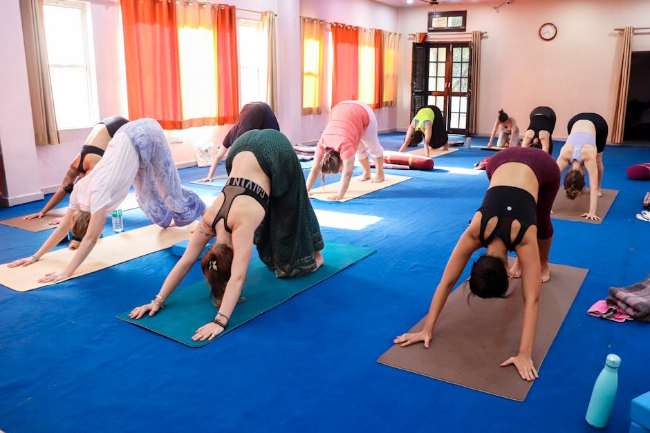

Asana vs. Trello: List Views or Kanban Boards?
Choosing between Asana and Trello for project management? We compare their structures, features, and best use cases to guide your decision.
By Upingi Team / Updated on June 18, 2024
Choosing between Asana and Trello for project management? We compare their structures, features, and best use cases to guide your decision.
By Upingi Team / Updated on June 18, 2024
Asana and Trello are two giants in the project management software space, both aiming to bring clarity and organization to team workflows. Trello is famous for its simple, visual Kanban board approach, while Asana offers more structure and flexibility with multiple view options (List, Board, Timeline, Calendar).
Which one aligns better with your team's processes and complexity needs? Let's find out.
Placeholder comparing Asana's multiple project views, task dependencies, custom fields, and reporting versus Trello's straightforward Kanban boards, Power-Ups (integrations), and ease of use.
| Feature | Asana | Trello |
|---|---|---|
| Core View | Multiple (List, Board, Timeline, etc.) | Kanban Boards |
| Task Management | Advanced (Dependencies, Subtasks) | Simple (Checklists, Labels) |
| Complexity | Moderate to High | Low (Easy to learn) |
Placeholder discussion on automation (Rules vs. Butler), team collaboration features, and mobile app experience.
Placeholder exploring which tool works best for different types of projects and team sizes. Trello shines for visual workflow management and smaller teams/projects. Asana scales better for complex projects, cross-functional initiatives, and larger organizations.
Placeholder outlining ideal users: Trello for teams needing a simple, visual way to track tasks, often for marketing, content creation, or personal productivity. Asana for teams managing complex projects with dependencies, needing detailed reporting, or requiring multiple ways to visualize work.
Placeholder summary: Trello offers unmatched simplicity and visual clarity with its Kanban approach, ideal for straightforward workflows. Asana provides a more robust, structured environment with greater flexibility and power for managing complex initiatives. The best choice depends heavily on your team's specific needs and preferred working style.